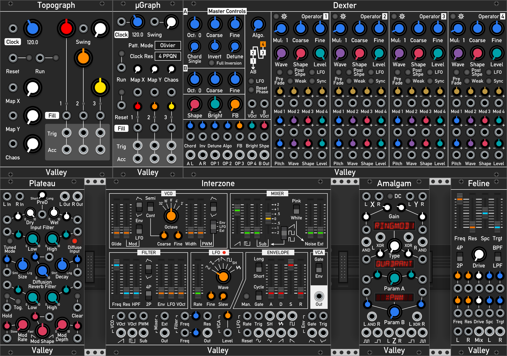

Add-on modules for VCV Rack
Available to download in the official VCV Rack Plugin Manager

List of modules
- Topograph & µGraph: Drum sequencer based on the Mutable Instruments' "Grids".
- Dexter: Complex, 4 operator FM, wavetable oscillator.
- Plateau: Highly modulateable, lush plate reverb.
- Amalgam: Stereo signal mulitplier, combiner and masher.
- Interzone: Monophonic, virtual analogue synth voice.
- Feline: Independent, stereo version of the filter from Interzone.
- Terrorform: A shapeshifting, wavetable synthesis voice.